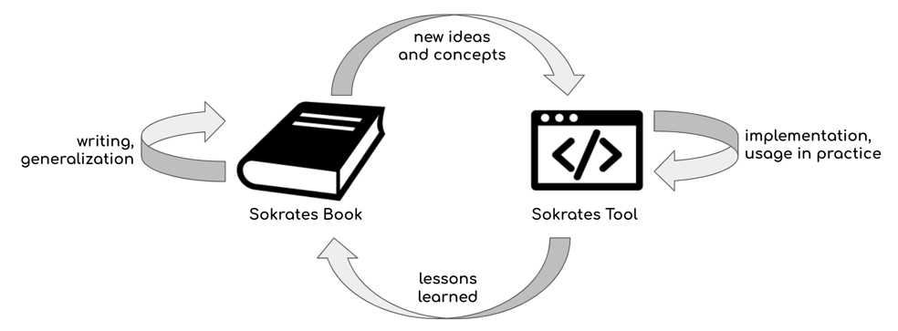

Intro: Sokrates Philosophy
What Is Sokrates?
Sokrates is both a book and a software tool. The text and the software are the two sides of the same coin. As a book, Sokrates presents a summary of the lessons I have learned on how to understand source code. But without the software, such a text would be very abstract and boring. The similar also applies to the software side of Sokrates soon. It isn’t easy to understand how to use Soknotes in a full power way without understanding its philosophy.
The journey to this book was through building Soknotes software. As I was using Soknetes in my daily work, I was making notes for this book. And as I have started to write the book, I also started to change some parts of Sokrates based on what I have learned. What I also hope to achieve by uniting a text and software is that you could get more than a mere manual for yet another analysis tool. Sokrates comes with more generic and universal philosophy, which I hope is useful beyond the tool. I also hope the book and the too will help you to build your tools.
 Figure 1: Sokrates book and Sokrates software tool are the two sides of the same coin. Developing software enabled me to implement ideas and tests them in practice, and to build a useful, proven tools. Writing a book helped me to organizes ideas, and obtain new insights, and share the lessons learned.
Sokrates is an experimental tool that I have build both as a way to deal with issues in my daily practice, as well as to explore how far a person can go by following a simple approach to building code analysis tools. Sokrates implements my vision on how to document and analyze software architectures of complex and simple software systems.
The result of my adventure is dual. First, I think I have managed to build a pretty useful and elegant tool. And learned a lot so to share it and hopefully influence new generations of practical and straightforward software analysis tools.
Sokrates is a simple tool, but because it follows a philosophy of one designer, it hopefully has conceptual integrity at a higher level than any other powerful enterprise tools. This book describes what I have learned during my work and building Sokrates. It is, in many aspects, subjective, presenting my view, experiences, and ideas. Nevertheless, I do think that you can learn something from it. I would also like to invite others to share their experiences. If many of us do this knowledge sharing, we will create a solid base of expertise and knowledge, validated in practice, that someone could use to create a mere generic and universal overview. I also believe this, while subjective, my experiences are relevant as I have built and analyzed software systems and worked mostly in practice, but with a strong research background. Most importantly, all that I will describe is implemented in the Sokrates tool and validated or at least used in practice in complex, messy reality. While no one has conducted a formal study to prove my ideas, successful usage in daily work gives me the confidence that what I am saying is useful.
Sokrates as a Documentaiton Tool
Sokrates is for anyone interested in software architecture in practice. Sokrates follows several premises (borrowing last two from Grady Booch):
- Any software architecture documentation disconnected from source code is doomed to become outdated and useless quickly.
- The best formal and unambiguous specification of a software-intensive system is its executable code.
- However, executable code as a specification is insufficient for visualizing, reasoning about, understanding, and communicating about that system.
Sokrates provides a pragmatic way to describe critical elements of software architectures and connect them explicitly to the source code. Based on a formal description of different software architecture aspects, Sokrates generates reports and visualization to help you reason, understand, and communicate about the software system.
About the Name
“The unexamined life is not worth living”
Exploration, dialog with the source code
“Socrates believed that philosophy – the love of wisdom – was the most important pursuit above all else. For some, he exemplifies more than anyone else in history the pursuit of wisdom through questioning and logical argument, by examining and by thinking. His ‘examination’ of life in this way spilled out into the lives of others, such that they began their own ‘examination’ of life, but he knew they would all die one day, as saying that a life without philosophy – an ‘unexamined’ life – was not worth living.”
As software is eating the world, examining life nowadays inevitably means examining software. And our life, at least mine, is huge part dedicated maintaining the software. So unexamined life is not worth living for many of us means unexamined software is not worth maintaining.
“Socrates believed that philosophy – the love of wisdom – was the most important pursuit above all else. For some, he exemplifies more than anyone else in history the pursuit of wisdom through questioning and logical argument, by examining and by thinking. His ‘examination’ of life in this way spilled out into the lives of others, such that they began their own ‘examination’ of life,”
What Sokrates Is (Not)?
Sokrates is more of a text analysis tool. Sokrates borrows ideas from code spelunking tools, in particular, grep, adding structure on top of regex source code searches.
Sokrates comes with both command-line interface and interactive GUI code explorer.
In these aspects, Sokrates differs from many other powerful tools, such as SonarQube or SIG SAT. It is not a replacement for these tools.
Learn You How To Think And Build Tools
Fish
Intellectual Control
Sokrates is about intellectual control. Rather than running sophisticated statistical and machine learning tools to understand your code, Sokrates goes back to the basics. You are using simple explicit expressions to understand and explain your system. “Intellectual control through simplicity” could easily be the Sokrates’ main motto.
The focus on intellectual control also means that there is little “magic” in Sokrates. Everything related to Sokrates configuration and analysis ic clearly stated and explicitly described. For instance, when initializing the configuration, Sokrates uses a long list of standard configuration settings to scope the system automatically. But even though automated, Sokrates explicitly writes down the chosen configuration in the configuration file, and you can change them.
Design Principles
Sokrates explores several areas, all centered around the idea of obtaining and maintaining intellectual control over your software projects.
Sokrates follows the following design principles:
- Transparency. Sokrates’ analyses contain no magic. Sokrates reports explicitly explain why some values are there and give you lists of files to double-check the results.
- Simplicity and directness.
- Do not replace thinking.
- Power of individuals. It should be possible for an individual to build a part of Sokrates’ analysis in their projects from scratch.
- Technology independence. Sokrates is technology independent, but offer helpers for configuration and analysis of standard technologies.
- Simple Portable Data Exports
- Playable / Art
Why Art?
I use the term art rather than science and engineering because I am fed up with misuse of these terms. I borrow a lot free Donald Knuth in his emphasis on aesthetics, the creation of programs that are beautiful.
John Stuart Mill: “Art in general consists of the truths of science, arranged in the most convenient order for practice, instead of the order which is the most convenient for thought. “
Donald Knuth: “Computer programming is an art, because it applies accumulated knowledge to the world, because it requires skill and ingenuity, and especially because it produces objects of beauty. A programmer who subconsciously views himself as an artist will enjoy what he does and will do it better.”
Maintainability
Sokrates looks on the source code from a perspective of maintenance, making visible the size, complexity and coupling of software.
For more details see my O’Reilly Video Training (from my time at Software Improvement Group): Building Maintainable Software (4 hours), and O’Reilly Webcast: Building Maintainable Software (1 hour, together with Rob van der Leek).
The fragment of my training video on building maintainable software is freely avaliable at Youtube:
How to User Sokrates?
Basic Understanding
On the one hand, you can use Sokrates as a bottom-up, reverse engineering tool, deriving architectural views from existing source code.
Sokrates primary about being able to get quick answers to basic, simple questions about your source code:
- How much code do you here?
- How much of it you’ve written yourself?
- How much of it you maintain?
- Which programming languages do you use?
- What is your primary or main code, the one used to define the structure and logic of the system in production?
- What is your secondary code, the one needed to test and build your system, but itself is not running in production?
- Do you generate some part of your codebase? How?
- How duplicated is your codebase? Why?
- How big are your files?
- How many units do you have? How big are they? How complex?
- How files in your codebase depend on each other?
Exploration
Goal Setting, Monitoring Trends and Feedback
On the other hand, you can use Sokrates in a top-down fashion, as a control tool monitoring deviations of source code from defining architectural rules. As a control tools, Sokrates can serve as an early warning system around these basic measurments:
- Duplication above some threshold,
- System or a a component becoming too big
- Units becoming more complex
- Unwanted dependencies among components are introduced.
Who Should Use Sokrates
While the general answer to this questions is “anyone interested in software architecture in practice,” my goal was to create a tool that ordinary software developers and software architects could use in daily work, regardless of how big or small is their project and what other tools they use.